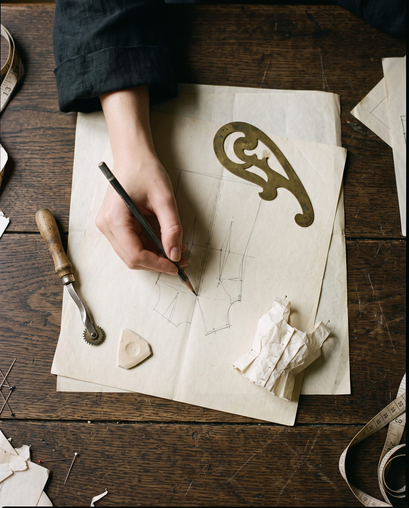
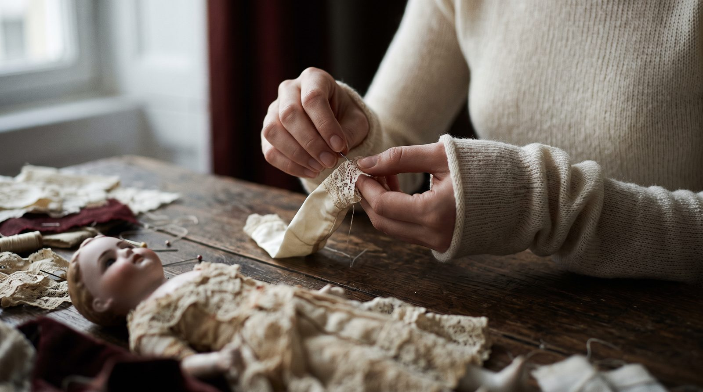
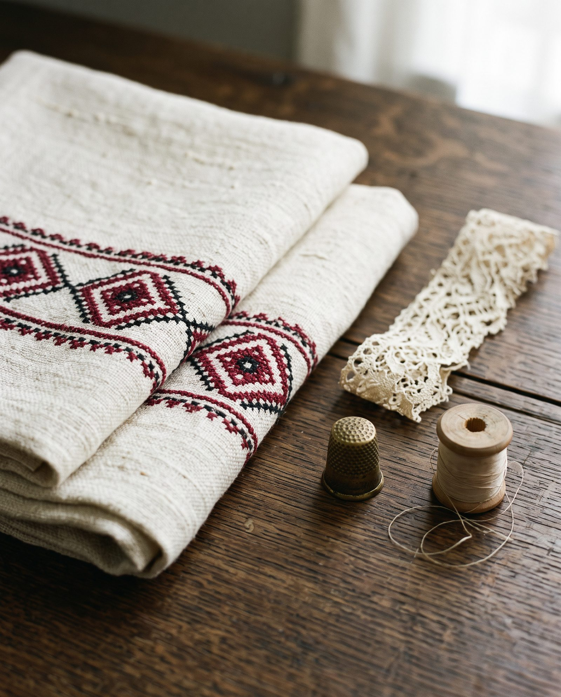
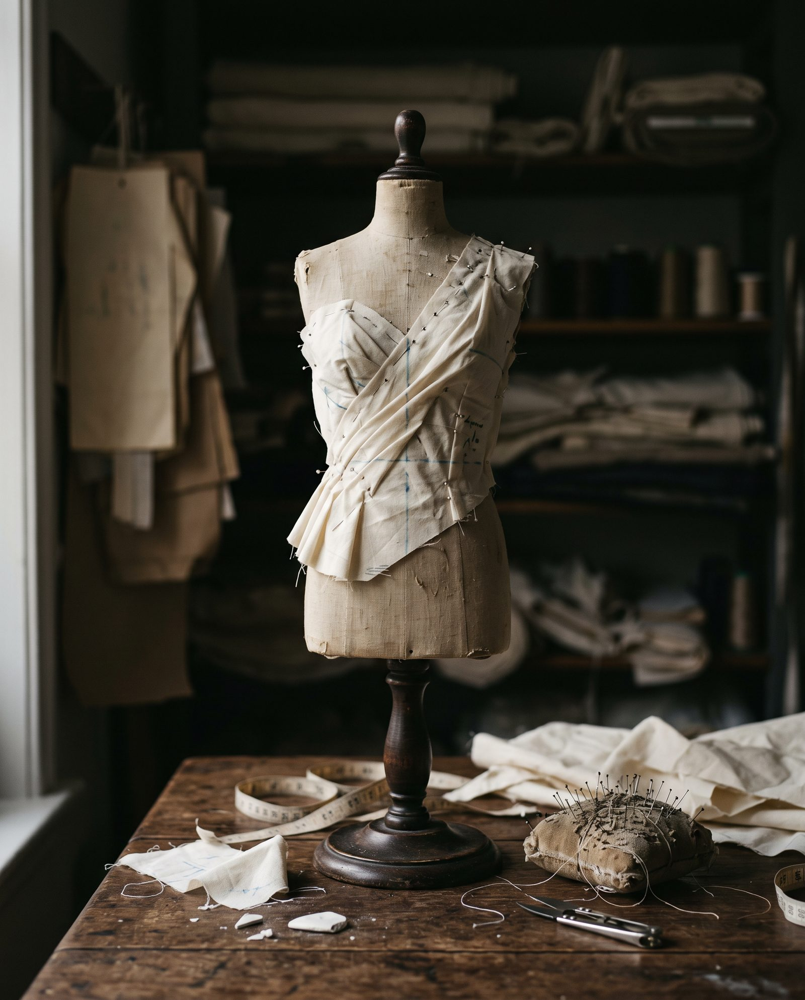
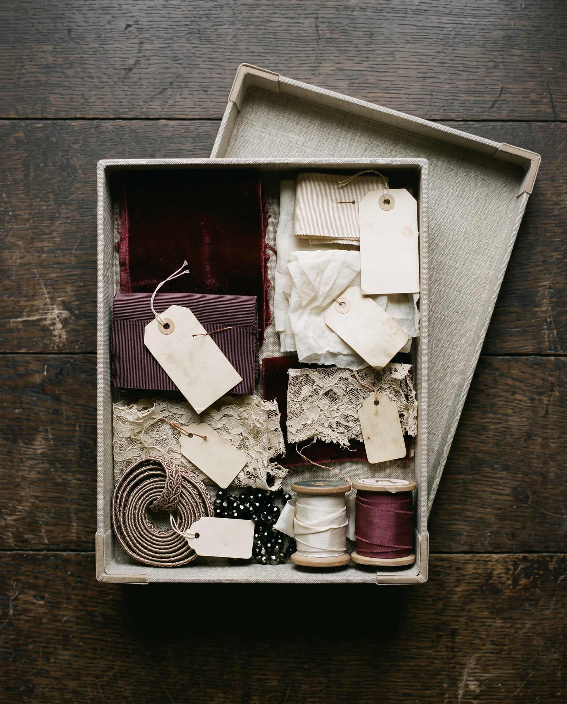
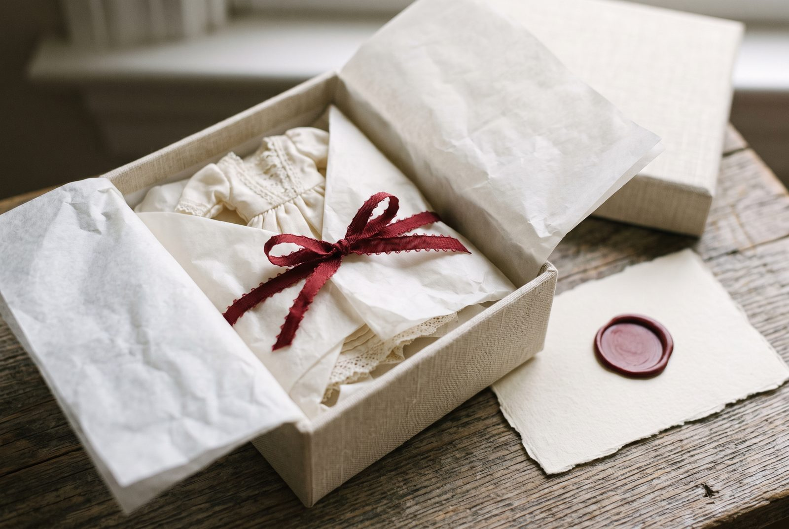
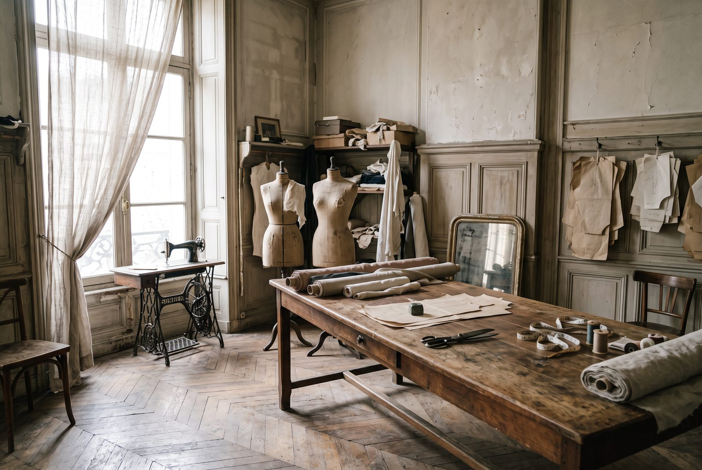

The pattern
Drafted by hand from her exact measurements.

Couture for antique dolls ательє
Garments drafted, cut and sewn entirely by hand — by a Ukrainian dressmaker with forty years at the cutting table.
Meet the makerAn antique doll arrives with a past. Our work is to dress her with the same seriousness with which she was first made.
— Maker Name, founder

In Ukraine, embroidery is read almost like a language — every motif placed with intent, every stitch counted. That is the culture Maker Name learned to sew in, and the discipline she brings to every miniature seam.
Four decades of designing and making dresses followed, before her work found its most intimate scale.
Her storyEach garment passes through the same stages a couture house would give a full-scale gown — only smaller, and with nowhere for an error to hide.

Drafted by hand from her exact measurements.

Balance and ease proven in cotton first.

Silks, lawns and laces chosen for scale.

Documented, wrapped and sent to its collector.
Commissions are made in the atelier and sent to collectors wherever their dolls are kept.

Tell us about your doll and the garment you imagine. A limited number of commissions are accepted each season.
Begin a commission